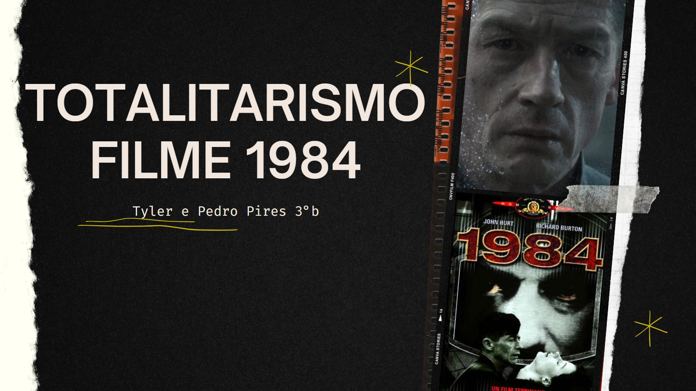

A atividade busca mostrar as práticas dos regimes totalitários, como o nazifascismo e o stalinismo, e como são representadas no cinema. Escolhi o filme "1984", fazendo uma apresentação no canva. Depois de analisar as cenas, descrevi-as no trabalho. Toda a atividade contribuiu para minha compreensão sobre os direitos humanos.

Urbanismo e cultura no começo do século XX
O objetivo dessa atividade foi escolher cinco imagens do início do século XX que mostrassem aspectos como arquitetura, economia e conflitos sociais no Brasil. Minhas imagens foram baseadas no Nilo Peçanha, um político brasileiro. A atividade aprofundou meu conhecimento histórico.